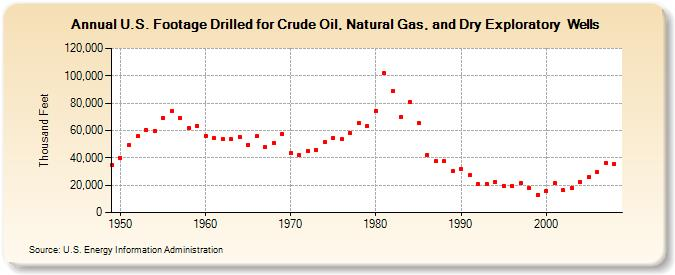

|
|||||
|  | |||||
| U.S. Footage Drilled for Crude Oil, Natural Gas, and Dry Exploratory Wells (Thousand Feet) | |||||
| Decade | Year-0 | Year-1 | Year-2 | Year-3 | Year-4 | Year-5 | Year-6 | Year-7 | Year-8 | Year-9 |
|---|---|---|---|---|---|---|---|---|---|---|
| 1940's | 34,798 | |||||||||
| 1950's | 40,175 | 49,344 | 55,615 | 60,664 | 59,601 | 69,206 | 74,337 | 69,181 | 61,484 | 63,253 |
| 1960's | 55,831 | 54,442 | 53,616 | 53,485 | 55,497 | 49,204 | 55,709 | 47,839 | 50,958 | 57,466 |
| 1970's | 43,530 | 41,895 | 44,956 | 45,618 | 51,315 | 54,677 | 53,617 | 57,949 | 65,197 | 63,096 |
| 1980's | 74,288 | 101,808 | 88,856 | 69,690 | 80,853 | 65,602 | 42,305 | 37,462 | 37,357 | 30,270 |
| 1990's | 31,837 | 27,127 | 20,548 | 20,984 | 22,377 | 19,345 | 19,690 | 21,478 | 17,641 | 13,062 |
| 2000's | 16,123 | 21,313 | 16,130 | 17,785 | 22,382 | 25,955 | 29,630 | 36,534 | 35,585 |
| - = No Data Reported; -- = Not Applicable; NA = Not Available; W = Withheld to avoid disclosure of individual company data. |
| Release Date: 7/31/2015 |
| Next Release Date: 8/31/2015 |
Referring Pages: